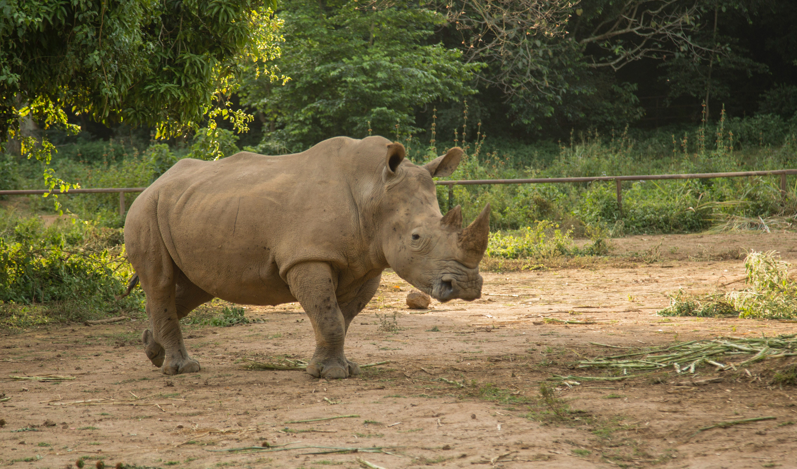

- 

Hola, soy Lucia, vegetariana desde hace un tiempo, te traigo este sitio para mostrarte un poco del mundo donde los animales son libres. Vas a encontrar musica de artistas que comparten los mismos valores, recetas para probar nuevos sabores y si ya sos vegetariano, para que tengas algunas ideas, una pagina con enlaces de sitios donde realizar compras de productos vegetarianos y/o no testeados en animales, a si como también una pagina para informarte sobre noticias, eventos y demás. Espero que puedas disfrutarlo tanto como yo!